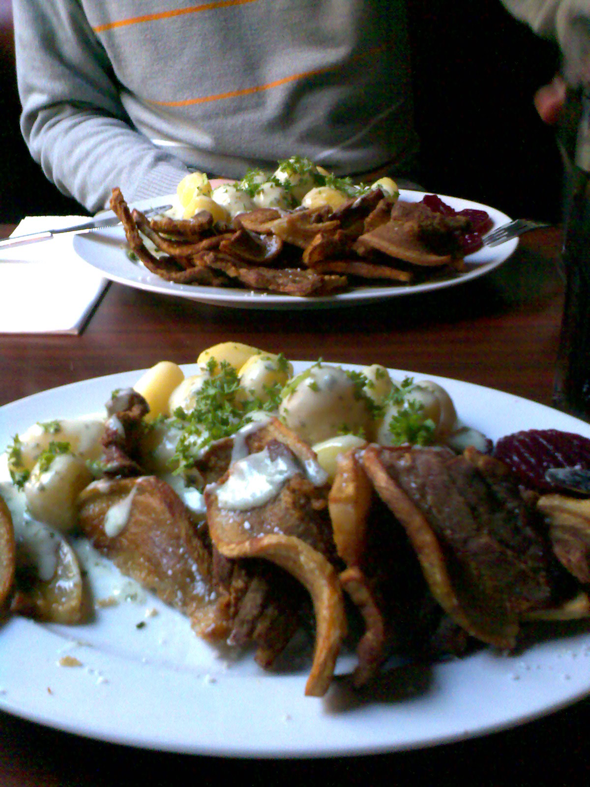
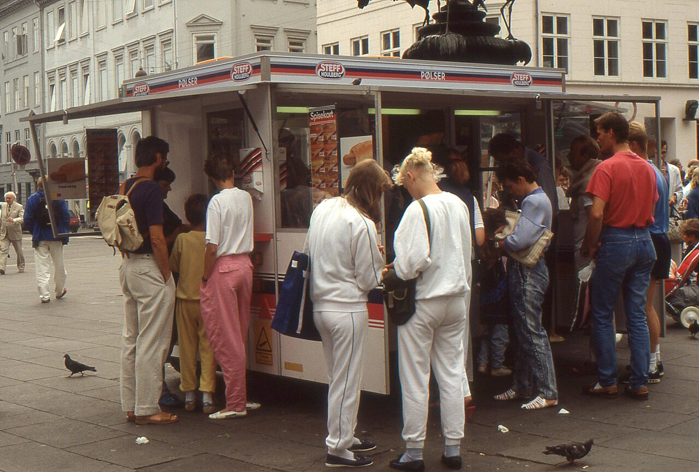
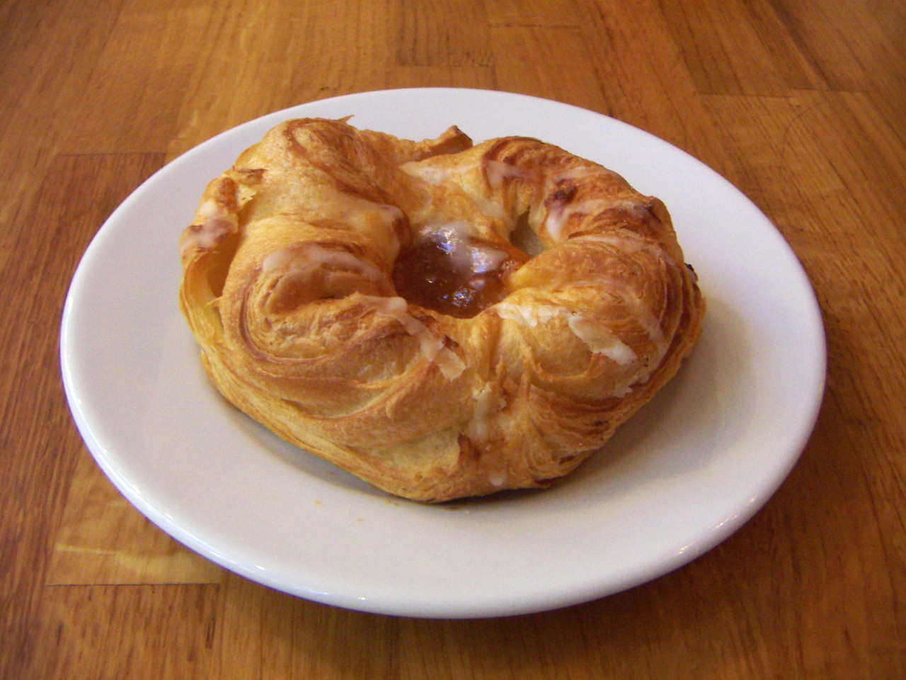

Keturios dienos Kopenhagoje: senamiestis, karališkosios pilys, kanalai, meno muziejai ir gatvės maistas. Paskutinį vakarą — Deep Purple koncertas Royal Arenoje. Visos dienos suplanuotos pėsčiomis ir viešuoju transportu (metro, autobusas, kanalo laivelis), automobilio nuomos nėra.
🏠 Nakvynė
Apartment with canal view
Adresas: Kenny Drews Vej 37, 2450 København (Sydhavnen / Pietų uostas rajonas)
Įvertinimas: 9,0/10 · 50 atsiliepimų (Booking.com)
Jaukus apartamentas su kanalo vaizdu Kopenhagos Sydhavnen rajone — vienas miegamasis, pilnai įrengta virtuvė, valgomasis ir terasa su vandens bei sodo vaizdu. Rajonas naujas ir ramus, bet kiek toliau nuo senamiesčio — skirkite papildomai 10–15 min kelionei viešuoju transportu iki lankytinų vietų.


Nuotraukos: Booking.com


🌙 Vakarienė šalia apartamentų: jei liko jėgų, čia pat prie Sydhavnen apartamentų veikia Palermo Pizzeria – pigi ir patogi vakarienė per kelias minutes pėsčiomis (~15 €/asm.). 📍 Google Maps
🌧 Planas B (jei blogas oras)
Orui jautru: Nyhavn (kanalo krantinės pasivaikščiojimas lauke) ir Vor Frelsers Kirke bokštas (uždaromas stipriu vėju/lietumi) – likusi dienos dalis (bažnyčios vidus, kavinės, Rundetårn rampa, dengtas Torvehallerne turgus) orui nejautri.
Christianshavn lietingą dieną – architektūra vietoj Nyhavno
🚗 Viso važiavimo: ~35 min.
🧭 Plano B maršrutas Google Maps
Patarimas: DAC (BLOX) penktadieniais dirba iki 21:00, tad laiko spūsčių nebus; bilietas suaugusiam 135 DKK, jaunimui iki 27 m. – 60 DKK.
Planas B baigiasi toje pačioje vietoje kaip ir pagrindinis planas – Torvehallerne turguje.


🌧 Planas B (jei blogas oras)
Orui jautru: pasiplaukiojimas kanalais atviroje valtyje – esant tokiam vėjui (iki 45,8 km/h) reisai dažnai atšaukiami arba nesaugūs; Christiania ir Reffen – lauko erdvės (trumpos, bet orui jautrios).
Muziejai ir dizainas vietoj kanalo kelionės
🚗 Viso važiavimo: ~39 min.
🧭 Plano B maršrutas Google Maps
Patarimas: Designmuseum Danmark šeštadienį dirba 10:00–18:00, bilietas 140 DKK; Reffen turi dengtas/šildomas sėdimas vietas – rinkitės jas, jei stipriai lis.
Planas B baigiasi toje pačioje vietoje kaip ir pagrindinis planas – Reffen.
🎉 Deep Purple koncertas Royal Arenoje šį vakarą – durys atsidaro apie 18:00. Taip pat naktį iš šeštadienio į sekmadienį (spalio 24/25-osios naktis) laikrodžiai pasukami į žiemos laiką – naktis bus viena valanda ilgesnė, patikrinkite, ar telefonas atsinaujina automatiškai.


🌧 Planas B (jei blogas oras)
Orui jautru: Tivoli – atviras pramogų parkas, atrakcionai dažnai uždaromi dėl vėjo (iki 42,8 km/h) ir lietaus; likusi dienos dalis (pilys, muziejai, koncertas) jau vidaus objektai.
Senamiestis ir Nacionalinis muziejus vietoj Tivoli
🚗 Viso važiavimo: ~19 min.
🧭 Plano B maršrutas Google Maps
Patarimas: Nationalmuseet nuolatinė ekspozicija nemokama, sekmadienį dirba 10:00–17:00, ~5 min pėsčiomis nuo Glyptoteko.
Planas B baigiasi toje pačioje vietoje kaip ir pagrindinis planas – Royal Arena, Deep Purple koncertas.


🌧 Planas B (jei blogas oras)
Orui jautru: Frederiksberg Have – lauko parko pasivaikščiojimas šaltą/vėjuotą rytą; likusi dienos dalis – tik atsiskaitymas ir skrydis, orui nejautru.
Zoologijos sodas vietoj parko pasivaikščiojimo
🚗 Viso važiavimo: ~21 min.
🧭 Plano B maršrutas Google Maps
Patarimas: Kopenhagos zoologijos sodas pirmadienį, 2026-10-26, dirba 9:00–17:00, bilietas suaugusiam ~260 DKK; dramblių ir tropikų namai leidžia pasislėpti nuo lietaus.
Planas B baigiasi toje pačioje vietoje kaip ir pagrindinis planas – oro uoste, prieš skrydį į Kauną.
🗺️ Žemėlapis
💰 Biudžetas
| Kategorija | Suma (4 keliautojams) | Pastaba |
|---|---|---|
| Skrydžiai KUN↔CPH | ~572 € | Rekomenduojama pirkti kuo greičiau, kainos artėjant datai dažnai kyla |
| Nakvynė (3 naktys) | 780 € | Patikrinkite tiksliai Booking.com puslapyje, ar tai bendra kaina, ar kaina už naktį |
| Maistas (4 dienos) | ~712 € | Pagal šiame plane nurodytas vietas |
| Bilietai į lankytinas vietas | ~640 € | Pilys, muziejai, bokštai, kanalų plaukiojimas |
| Deep Purple koncertas | 380 € | 95 €/asm. |
| Viešasis transportas | ~150 € | Metro, autobusas, harbour bus, 4 dienos |
| Automobilio nuoma | 0 € | Automobilis šioje kelionėje nenuomojamas |
| Iš viso (tikėtina) | ~3 234 € | ≈ 809 €/asmeniui |
ℹ️ Praktinė informacija
- Dokumentai: galiojantis pasas ar asmens tapatybės kortelė – Danija yra Šengeno erdvėje, vizos ES piliečiams nereikia.
- Valiuta: Danijos krona (DKK), ne euras. Kortelės priimamos beveik visur, net smulkiems pirkiniams – vis dėlto turėkite šiek tiek grynųjų Christianijai (ten bankomatų mažai) ir mažiems gatvės prekystaliams.
- Arbatpinigiai: neprivalomi – aptarnavimas įskaičiuotas į sąskaitą. Galima apvalinti sumą arba palikti ~10 % tik už išskirtinį aptarnavimą.
- Sveikata: pasiimkite EHIC (Europos sveikatos draudimo kortelę) – nemokamas ar sumažintas gydymas ES piliečiams.
- Avarinis numeris: 112 (policija, gaisrinė, greitoji, nemokamas skambutis). Nemedicininė konsultacija: 1813 (kalbama angliškai).
- Viešojo transporto bilietai: pirkite „Rejsebillet" programėlėje arba automate stotyje; intensyviai lankant miestą gali apsimokėti 24 val. City Pass.
- Papročiai: danai vertina punktualumą ir eilių laikymąsi. Dviračių takai (cykelsti) – rimtas dalykas, niekada neikite jais pėsčiomis.
- Sauga: Kopenhaga apskritai labai saugi; įprastas budrumas turistinėse vietose (Nyhavn, Strøget). Christiania saugu dienos metu, vakare venkite, Pusher Street zonoje nuotraukų nedarykite.
- Apartamentai įsikūrę Sydhavnen rajone, kiek toliau nuo senamiesčio ir Christianshavn -- kelias į visas lankytinas vietas ir oro uostą patogus ir asfaltuotas, tačiau skirkite papildomai 10-15 minučių kelionei autobusu, traukiniu ar metro.
- Iš oro uosto į apartamentus Sydhavnen rajone patogiausia važiuoti taksi arba autobusu/traukiniu su persėdimu -- tiesioginio metro iki šio rajono nėra.
- Šeštadienį po pasiplaukiojimo kanalais patogiausia iki Reffen plaukti Havnebusu tiesiai nuo Nyhavno prieplaukos -- galioja tas pats bilietas kaip autobusui ar metro.
- Po šeštadienio Deep Purple koncerto Royal Arenoje (baigiasi apie 22:30) grįžtant į Sydhavnen, iš anksto pasitikrinkite vakarinio S-traukinio ar autobuso tvarkaraštį.
- Naktį iš šeštadienio į sekmadienį (spalio 24/25-osios naktis) laikrodžiai pasukami į žiemos laiką -- naktis bus viena valanda ilgesnė, patikrinkite, ar telefonas atsinaujina automatiškai.
- Pirmadienį dauguma Kopenhagos muziejų (tarp jų Nationalmuseet) uždaryti -- ryto pasivaikščiojimui pasirinktas Frederiksberg Have parkas visada atviras ir nemokamas.
- Paskutinę dieną į oro uostą atvykstama apie 2,5 val. prieš skrydį -- registracijai, bagažo pridavimui ir pietums laiko pakanka.
☁️ Orų prognozė
Tikslesnė prognozė atsinaujins artėjant kelionei – šios reikšmės jau rodo tikėtiną orą visoms keturioms dienoms.
🎒 Ką pasiimti
- Skysčiai rankiniame bagaže – tik iki 100 ml talpyklose, visi vienoje 1 l permatomoje pakuotėje, nes lagaminų registruoti neplanuojama.
- Lietaus tikimybė 55–69% kiekvieną dieną – rinktis vandeniui atsparią striukę ir batus, o ne tik lietpaltį, nes bus daug vaikščiojimo tarp objektų.
- Danijos valiuta – Danijos krona (DKK), ne euras; kortelė tinka beveik visur, grynieji tik smulkmenoms.
- Visoms kelionėms mieste naudojamas vienas bilietas (metro/autobusas/Havnebus) per DOT/Rejseplanen programėlę arba 'Rejsebillet' – patogiau nei pirkti popierinius bilietus.
- 10-25 naktį laikrodžiai persukami į žiemos laiką – telefonas atsinaujina automatiškai, bet patikrinti prieš kelionę į oro uostą.
Dokumentai ir pinigai
Drabužiai (vėsa, lietus, vėjas 7–12°C)
Avalynė
Miestui ir viešajam transportui
Higiena ir vaistai
Elektronika
🍽️ Kur pavalgyti
1 diena
Café Wilder – Wildersgade 56. Bistro/kavinė, netoli Vor Frelsers Kirke. ~25 €/asm. Jaukus Christianshavn rajono bistro su prancūzišku-daniškos virtuvės meniu. 📍 Google Maps
Hallernes Smørrebrød – Frederiksborggade 21. Prekystalis Torvehallerne turguje. ~15 €/asm. Seniausias ir labiausiai vertinamas smørrebrød prekystalis mieste. 📍 Google Maps
Palermo Pizzeria – Borgbjergsvej 11. Kaimynystės picerija prie apartamentų. ~15 €/asm. Pigi ir patogi vakarienė per kelias minutes pėsčiomis. 📍 Google Maps
2 diena
Restaurant Schønnemann – Hauser Plads 16. Klasikinis smørrebrød restoranas nuo 1877 m., netoli Amalienborgo. ~30 €/asm. 📍 Google Maps
Reffen – Refshalevej 167A. Gatvės maisto turgus. ~18 €/asm. Didžiausias Šiaurės Europos gatvės maisto turgus prie vandens. 📍 Google Maps
3 diena
Café Glyptoteket – Dantes Plads 7. Muziejaus kavinė žiemos sode. ~20 €/asm. 📍 Google Maps
Field's maisto aikštelė – Arne Jacobsens Allé 12. Prekybos centro maisto aikštelė prieš koncertą. ~15 €/asm. 📍 Google Maps
4 diena
Sonny – Frederiksberg Allé 12. Kepyklos kavinė netoli Frederiksberg Have. ~10 €/asm. Dirba ir pirmadieniais nuo 8 val. 📍 Google Maps
Aamanns – oro uosto terminale. Smørrebrød restoranas prieš skrydį. ~20 €/asm. 📍 Google Maps
🍸 Ypatingi barai
Nimb Bar – Bernstorffsgade 5 (Tivoli parko viduryje, 3 diena). 1909 m. maurietiško stiliaus rūmų buvusi baliaus salė su krištolo sietynais. 📍 Google Maps
Ruby – Nybrogade 10 (prie Christiansborgo, 3 diena). Vienas geriausiai pasaulyje vertinamų kokteilių barų, 1740 m. senamiesčio pirklio namuose. 📍 Google Maps
🥟 Ką paragauti

Smørrebrød
Atviras ruginės duonos sumuštinis su įvairiais apkepais – silke, krevetėmis, kiaušiniu, roastbeef ar kepenų paštetu. Danijos virtuvės simbolis.
Kaina: 10–18 €
Kur paragauti: Restaurant Schønnemann, Hallernes Smørrebrød, Aamanns
Autorius: Kritzolina, CC BY-SA 4.0, šaltinis

Stegt flæsk su petražolių padažu
Traškiai apkepintos kiaulienos lašinių riekelės su virtomis bulvėmis ir baltu petražolių padažu – vienas populiariausių Danijos nacionalinių patiekalų.
Kaina: 15–25 €
Kur paragauti: Restaurant Schønnemann
Autorius: ChildofMidnight (en.wikipedia), CC BY 2.0, šaltinis

Frikadeliai
Kiaulienos ir jautienos faršo kotletėliai, kepti svieste, patiekiami su virtomis bulvėmis, padažu ir raudonaisiais kopūstais arba ant ruginės duonos riekelės.
Kaina: 10–18 €
Kur paragauti: Restaurant Schønnemann, Hallernes Smørrebrød
Autorius: cyclonebill, CC BY-SA 2.0, šaltinis

Raudonasis dešrainis
Raudona rūkyta dešra skrudintoje bandelėje su garstyčiomis, kečupu, svogūnais ir marinuotais agurkais – klasikinis greitas daniškas užkandis, paplitęs nuo 1920-ųjų.
Kaina: 5–9 €
Kur paragauti: Reffen
Autorius: Ian Watson, CC0, šaltinis

Danieliškas keksiukas (wienerbrød)
Sluoksniuota mielinė tešla su sviestu ir varškės, marcipano ar vaisių įdaru – tai, ką pasaulyje vadina „danish pastry".
Kaina: 3–6 €
Kur paragauti: Sonny
Autorius: Peter Isotalo, CC BY-SA 3.0, šaltinis

Obuolinukai (æbleskiver)
Apvalūs, blynams panašūs saldūs kukuliukai, kepami specialioje keptuvėje su duobutėmis, barstomi cukraus pudra ir patiekiami su uogiene – populiarus rudens skanėstas.
Kaina: 5–9 €
Kur paragauti: Sonny
Autorius: JoachimK, Public domain, šaltinis
Karštas vynas (gløgg)
Šiltas prieskoniais pagardintas raudonas vynas su migdolais ir razinomis – tradicinis šiltas gėrimas šaltėjant orams, spalio pabaigoje jau pasirodantis kai kuriuose baruose ir turguose.
Kaina: 5–8 €
Kur paragauti: Reffen
✈️ Grįžtamoji informacija
Apartamentų atsiskaitymas: ne vėliau kaip 12:00, 4 diena (2026-10-26)
Skrydis namo: CPH → KUN, išvykimas 15:15, atvykimas 17:45
Kontaktai nenumatytiems atvejams: ______________ (įrašykite prieš kelionę)